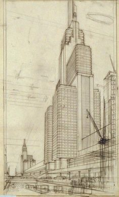

El dibujo arquitectónico es fundamental en el diseño y construcción de edificios y estructuras. Estos dibujos representan visualmente la disposición y las características de una construcción.
De Planta: Muestran la disposición de las habitaciones y los espacios dentro de una estructura vista desde arriba.
Proporcionan vistas exteriores de una estructura desde diferentes ángulos.
Este tipo de dibujo se enfoca en la representación de piezas y ensamblajes mecánicos. Es vital para la ingeniería mecánica y la fabricación.
Planos de Piezas: Detallan cada componente individual de una máquina.
de Ensamblaje: Muestran cómo se unen varias piezas para formar un conjunto completo.
El dibujo eléctrico se utiliza para diseñar y documentar sistemas eléctricos. Es crucial en la ingeniería eléctrica y la construcción.
Unifilares: Muestran una representación simplificada de un sistema eléctrico completo.
Esquemas de Circuitos: Detallan las conexiones precisas entre componentes eléctricos.
Este tipo de dibujo es esencial para la planificación y construcción de infraestructuras como carreteras, puentes y sistemas de alcantarillado.
Topográficos: Muestran las características del terreno y elevaciones.
Planos de Obras: Detallan los proyectos de construcción civil, incluyendo materiales y estructuras.